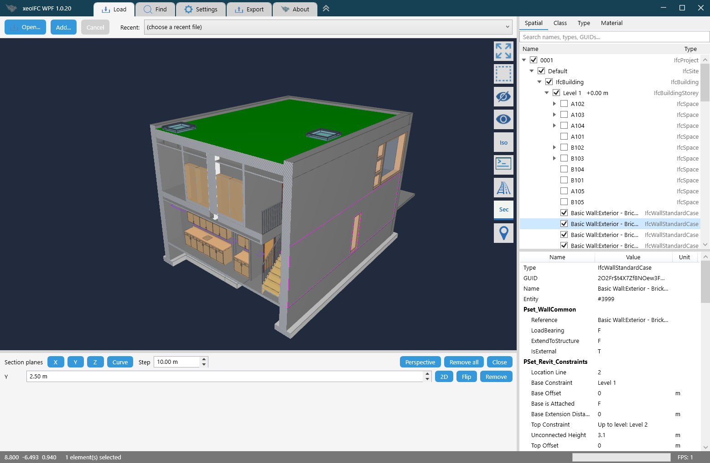

A C# desktop IFC viewer on xeoifc.dll, with WPF
xeoIFC WPF is a desktop IFC viewer for Windows in C#. It has the features and the layout of the Qt viewer, in about 6,500 lines of C# and XAML with WPF on .NET 10, without a NuGet package. Its source code is open (MIT licence).
The IFC work is done by xeoifc.dll, the native library of xeoIFC, through the same plain C header that the
Qt viewer uses. There is no .NET assembly of the library: one source file declares the functions of the header for
P/Invoke. This page shows how a WPF window hosts the 3D view of the library, and the calls in C#.
1. The application

- Open
.ifcand.ifczipfiles (IFC 2x3, IFC 4, IFC 4.3) and LandXML from the file dialog, the recent list, by drag and drop or from the command line. Several files load in parallel into one scene, placed by their georeference. - Rotate about the point under the cursor, pan and zoom. Click an element, or drag a rectangle to select many.
- Model tree by spatial structure, class, type and material, with a search field and a visibility box per row; attributes and property sets of the selected element.
- Find elements by entity id, GlobalId or name.
- Hide, isolate and make transparent.
- Sharp edges and drafting lines: axes, footprints, plan lines, annotations and grids.
- Section planes along X, Y and Z or across a rail or road axis, with a 2D view of the section.
- The rail and road axes of a model, and a check of its georeferencing against reference points.
- Write the selection, or several loaded files, to one new IFC file (split and merge).
- Reload files that change on disk, with the same view.
2. Download
From the releases page:
xeoifc-wpf-windows-amd64.zip: the application ready to run. It needs the .NET 10 Desktop Runtime (x64) or a newer one. Unpack the zip and startxeoifc-wpf.exe.xeoifc-wpf-source.zip: the .NET project with the source code (MIT licence),xeoifc.h,xeoifc.dllfor Windows x64, a README with the build steps, the licence texts and the notices of the open-source parts in the library.
3. How a WPF window hosts the 3D view
WPF draws a window with its own renderer. The library renders with wgpu into a native window that you give it. WPF has
a class for this case: an HwndHost element owns a native child window and keeps it on its place in the
layout. The application creates the child window there and gives it to the library.
public sealed class ViewportHost : HwndHost
{
protected override HandleRef BuildWindowCore(HandleRef hwndParent)
{
_hwnd = Win32.CreateViewportWindow(hwndParent.Handle); // CreateWindowExW: WS_CHILD, no background brush
return new HandleRef(this, _hwnd);
}
...
}
// At the first WM_SIZE of the child window. The library draws into it with its own surface (sizes are physical pixels).
_viewer = Viewer.Create(_hwnd, width, height, out var error); // xeoifc_viewer_create
CompositionTarget.Rendering += OnRendering; // every WPF frame: xeoifc_viewer_frameThree details make it work:
- Mouse input in the window procedure.
HwndHostpasses the messages of the child window to itsWndProcmethod. The positions there are physical pixels in the 3D view, the unit of the library, on every monitor scale. The keyboard stays with WPF: the element can have the focus and gets the key events. - One call per frame.
CompositionTarget.Renderingcallsxeoifc_viewer_frame, which draws only when something changed. Hover and wheel zoom read back from the GPU, so the last position of each is applied there once per frame, not once per mouse message. - A second window over the 3D view. WPF cannot draw on top of a native child window. The tool buttons, the console, the welcome card, the drop zones and the selection rectangle are in a window of their own: without a border, transparent per pixel, owned by the main window and kept on the screen rectangle of the 3D view. Its fully transparent pixels pass the mouse on to the view below.
protected override nint WndProc(nint hwnd, int msg, nint wParam, nint lParam, ref bool handled)
{
int x = Win32.LoWord(lParam), y = Win32.HiWord(lParam);
var keys = (int)wParam;
switch (msg)
{
case Win32.WM_SIZE:
var (w, h) = ((uint)(lParam & 0xFFFF), (uint)((lParam >> 16) & 0xFFFF));
EnsureViewer(w, h);
if (w > 0 && h > 0) _viewer?.Resize(w, h); // xeoifc_viewer_resize
Placed?.Invoke();
break;
case Win32.WM_LBUTTONDOWN:
Press(Button.Left, x, y, (keys & Win32.MK_SHIFT) != 0); // xeoifc_viewer_anchor_pick: rotate about this point
break;
case Win32.WM_MOUSEMOVE:
Move(x, y); // xeoifc_viewer_orbit or xeoifc_viewer_pan_to
break;
...
}
return base.WndProc(hwnd, msg, wParam, lParam, ref handled);
}<Window x:Class="XeoIfcWpf.ViewOverlay" ...
WindowStyle="None" AllowsTransparency="True" Background="Transparent" ResizeMode="NoResize"
ShowInTaskbar="False" ShowActivated="False" Focusable="False" ...>// MainWindow: the overlay stays above its owner and follows the native window of the 3D view.
_overlay.Owner = this;
Viewport.Placed += GlueOverlay;
// ViewOverlay: physical pixels, so it is exact on every monitor scale.
public void Glue(nint viewport)
{
if (_hwnd == 0 || viewport == 0 || !Win32.GetWindowRect(viewport, out var r))
{
return;
}
Win32.SetWindowPos(_hwnd, 0, r.Left, r.Top, r.Width, r.Height,
Win32.SWP_NOZORDER | Win32.SWP_NOACTIVATE | Win32.SWP_NOOWNERZORDER);
}The overlay has the window style WS_EX_NOACTIVATE, so a click on a tool button leaves the main window
active. The same pattern works for any renderer that takes a native window handle.
4. The library from C#
The library has a plain C interface: functions, opaque handles, and UTF-8 JSON strings in and out.
Interop/Native.cs declares the 87 functions of the header with LibraryImport, and
Interop/XeoIfc.cs wraps them in three classes that free what the library returns: Session,
LoadJob and Viewer. The two files do not use WPF; you can copy them into your own .NET
project.
internal static unsafe partial class Native
{
private const string Lib = "xeoifc";
[LibraryImport(Lib)] public static partial nint xeoifc_session_new();
[LibraryImport(Lib, StringMarshalling = StringMarshalling.Utf8)]
public static partial nint xeoifc_call(nint session, string requestJson);
[LibraryImport(Lib, StringMarshalling = StringMarshalling.Utf8)]
public static partial nint xeoifc_load_start(nint session, string path, string? optionsJson, XeoIfcLoadCallbacks* callbacks);
[LibraryImport(Lib)] public static partial int xeoifc_job_poll(nint session, nint job, out nint statusJson);
[LibraryImport(Lib)] public static partial int xeoifc_viewer_frame(nint viewer);
...
}
/// <summary>A string of the library as a .NET string; gives the memory back.</summary>
public static string? String(nint s)
{
if (s == 0) return null;
var text = Marshal.PtrToStringUTF8(s);
Native.xeoifc_free_string(s);
return text;
}Load a file in the background
A load job reads and tessellates the file on its own thread inside the library, and calls back on that thread. The
callbacks are static C# methods that only store the last progress. A DispatcherTimer polls the job every
30 ms on the GUI thread and gives the result to the renderer.
_self = GCHandle.Alloc(this);
var callbacks = new Native.XeoIfcLoadCallbacks
{
User = (void*)GCHandle.ToIntPtr(_self),
Progress = &OnProgress,
Snapshot = snapshots ? &OnSnapshot : null,
};
_job = Native.xeoifc_load_start(session.Raw, path, options.ToJsonString(), &callbacks);
// The two callbacks run on the job thread. An exception must not cross into the DLL.
[UnmanagedCallersOnly(CallConvs = [typeof(CallConvCdecl)])]
private static void OnProgress(void* user, byte* phase, uint done, uint total)
{
try
{
if (GCHandle.FromIntPtr((nint)user).Target is LoadJob job)
{
Volatile.Write(ref job._progress, new ProgressNote(Marshal.PtrToStringUTF8((nint)phase) ?? "", done, total));
}
}
catch { }
}var code = Native.xeoifc_job_poll(_session.Raw, _job, out var status); // 0 running, 1 done, 2 failed, 3 cancelled
...
case 1: Finished?.Invoke(Take.Object(status)); break;
// MainWindow, when the job has finished:
using (var pack = job.TakePack()) // the tessellated model, in the memory of the library
{
scene = pack == null ? -1 : viewer.SetScene(pack, _hub.Models.Count == 0 ? 0 : 1, placement);
}
...
Tree.AddModel(model, tree, Parse(status["groupings"]));Find elements
The document API is one function, xeoifc_call: a JSON request in, a JSON response out.
// A page holds 10,000 results at most: follow the cursor to the end.
string? cursor = null;
do
{
var args = new JsonObject { ["text"] = text, ["includeRefs"] = true, ["limit"] = 10000 }; // text: name ~ "M_Fixed"
if (cursor != null) args["cursor"] = cursor;
var reply = _hub.Session.Call("query.select", args, model.DocId);
...
var result = reply["result"]; // {"count":40,"refs":["#6293","#6412",..],..}
foreach (var entry in result?["refs"] as JsonArray ?? [])
{
if (entry?.ToString() is ['#', .. var number] && uint.TryParse(number, out var entity))
found.Add(new ElementRef(model.Scene, entity));
}
cursor = result?["nextCursor"]?.ToString();
}
while (!string.IsNullOrEmpty(cursor));FindPage.Found += elements => Viewport.Viewer?.FitElements(AsSpan(elements)); // xeoifc_viewer_fit_elementsSection planes
// A plane is its unit normal and -dot(point, normal).
var values = _planes.SelectMany(p => new[] { p.Normal.X, p.Normal.Y, p.Normal.Z, -Vector3.Dot(p.Point, p.Normal) }).ToArray();
viewer.SetClipPlanes(values); // xeoifc_viewer_set_clip_planes, at most six planes
// A 2D view straight at the section.
_viewport.Viewer?.ViewSection([plane.Point.X, plane.Point.Y, plane.Point.Z, plane.Normal.X, plane.Normal.Y, plane.Normal.Z]);What the library can do, with load times: the Qt viewer page.
5. Build it yourself
You need 64-bit Windows 10 or 11 and the .NET 10 SDK.
The project uses no NuGet packages. In the unpacked xeoifc-wpf-source.zip:
dotnet run -c Release -- model.ifcThe build copies sdk\lib\windows-x64\xeoifc.dll next to the exe. Visual Studio 2026 opens
xeoifc-wpf.csproj directly. This command writes the application as one file, which runs on the .NET
Desktop Runtime of the machine:
dotnet publish -c Release -p:PublishSingleFile=true -o publishLinux and macOS are not supported, because WPF runs on Windows only. The Qt viewer runs on Linux.
6. Licence
xeoIFC WPF is open source under the MIT licence. You can use, change and distribute it, also in commercial products.
The xeokit logo files in Resources/ and the logo shape in Styles.xaml are not covered by the
MIT licence. The application uses no third-party packages, and .NET is not in the zips.
xeoifc.dll is not open source. It is licensed under the
xeoIFC Testing License (sdk/LICENSE.txt in the source zip): you
can use and redistribute it unmodified, in binary form and free of charge, solely for testing and evaluation. For
commercial or production use, contact xeoFoundry. All functions work without a
licence key. Without a key, each IFC file that the library writes gets one more element: an
IfcBuildingElementProxy with the text "xeoIFC evaluation version" next to the model. A licence key from
xeoFoundry removes it; enter it on the Settings tab.